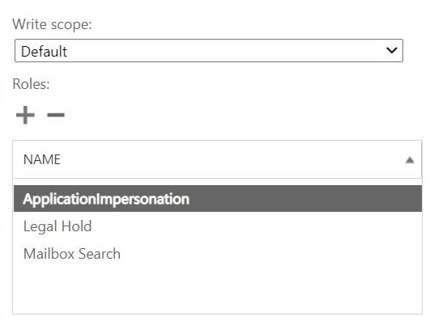
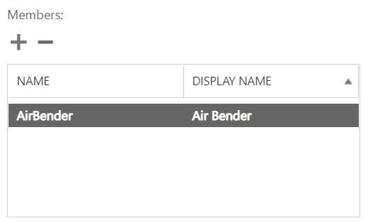

Demander de modifier un document
Demander de modifier un document Modifier sur GitHub
Modifier sur GitHub Guide des contributeurs
Guide des contributeursConfigurer l’emprunt d’identité pour Microsoft Exchange Online
Contributeurs
Si vous prévoyez d’utiliser SaaS Backup avec Microsoft Exchange Online, vous devez configurer l’emprunt d’identité. L’emprunt d’identité permet à votre compte de service Microsoft 365 d’emprunter des comptes d’utilisateur et d’accéder aux autorisations associées.
Configurer automatiquement l’emprunt d’identité
Pour configurer automatiquement l’emprunt d’identité, exécutez "Commandes MSDN PowerShell".
Configurer manuellement l’emprunt d’identité
Vous pouvez configurer manuellement l’emprunt d’identité à l’aide de votre compte d’administrateur Microsoft 365, ainsi qu’à l’aide des comptes de service Microsoft 365 ajoutés dans SaaS Backup. Pour plus d’informations sur les comptes de service Microsoft 365, rendez-vous sur "Création d’un compte de service Microsoft 365 avec des autorisations globales."
Pour configurer manuellement l’emprunt d’identité, procédez comme suit :
-
Connectez-vous à votre compte de service Microsoft 365.
-
Sélectionnez l’onglet Exchange.
-
Sur la gauche, sous Tableau de bord, sélectionnez autorisations.
-
Cliquez sur rôles d’administrateur.
-
Double-cliquez dans le volet de droite pour sélectionner Discovery Management.
-
Sous rôles, cliquez sur le symbole +.

-
Sélectionnez ApplicationImpersation dans le menu déroulant.
-
Cliquez sur Ajouter.
-
Cliquez sur OK.
-
Vérifiez que ApplicationImpersation a été ajouté sous Roles.
-
Sous membres, cliquez sur le symbole +.

Une nouvelle fenêtre s’affiche -
Choisissez le nom d’utilisateur.
-
Cliquez sur Ajouter.
-
Cliquez sur OK.
-
Vérifiez que le nom d’utilisateur apparaît dans la section membres.
-
Cliquez sur Enregistrer.